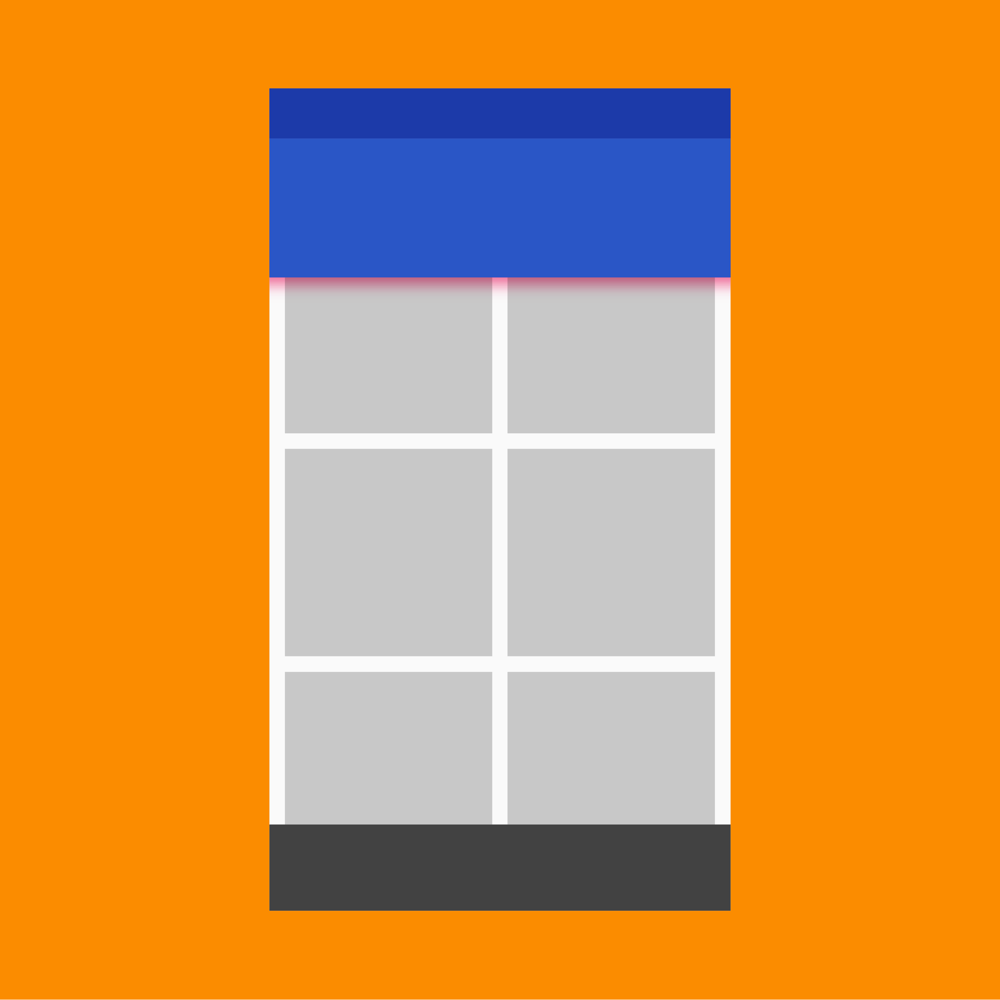

Scrolling techniques affect how content scrolls in relation to the app bar.
These following patterns describe the elevations at which content should scroll, how to size flexible space, and when to anchor specific elements.
App bar scrollable regions
Status bar
Toolbar
Tab bar/search bar
Flexible space
